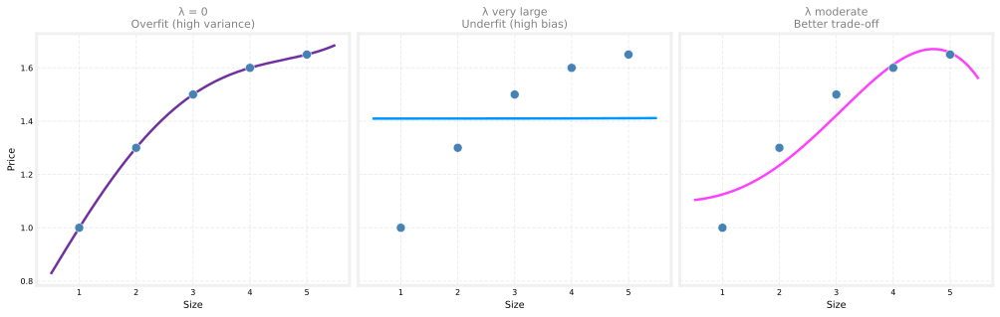
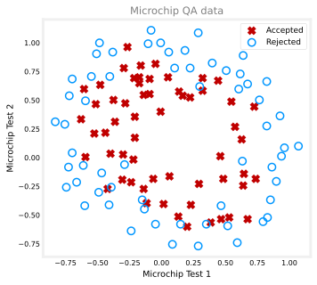
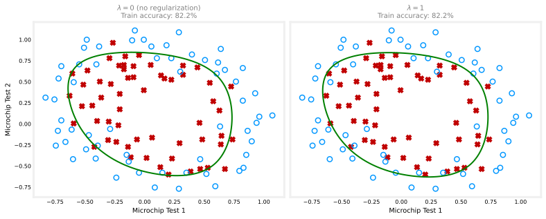

Regularization
machine-learning
supervised-learning
The regularized cost function adds a lambda penalty on weights to shrink parameters, trade off fit vs simplicity, and reduce overfitting in linear models.
On the overfitting page, you saw regularization previewed as a way to keep weights small so a model is less prone to overfitting. This page builds that intuition into a modified cost function you can actually optimize. If you have seen \(L_2\) regularization in the statistics course, much of this will feel familiar.
Review Questions
1. What problem does regularization primarily address?
TipAnswer
Overfitting (high variance), where the model fits training noise too closely and generalizes poorly.
Penalizing Large Weights
Return to the housing-price picture from the overfitting page. A quadratic model captures the flattening trend reasonably well. A high-degree polynomial can be very wiggly and hit every training point, but it often overfits.
Now suppose you could force only the highest-degree weights to be very small, close to zero. For a degree-4 polynomial with features \(x\), \(x^2\), \(x^3\), and \(x^4\), imagine shrinking \(w_3\) and \(w_4\) in
\[ f_{w,b}(x) = w_1 x + w_2 x^2 + w_3 x^3 + w_4 x^4 + b. \]
Instead of minimizing only the usual mean squared error cost, you could minimize
\[ J(w,b) + 1000\,w_3^2 + 1000\,w_4^2 \]
where \(J(w,b)\) is the standard linear regression cost and \(1000\) is simply a large constant (any very large number would send a similar message).
To make this modified cost small, the optimizer must keep \(w_3\) and \(w_4\) small. Otherwise the terms \(1000\,w_3^2\) and \(1000\,w_4^2\) explode. The model still includes \(x^3\) and \(x^4\), but their influence is greatly reduced. The fit often looks much closer to a smooth quadratic than to a wild degree-4 curve.
Review Questions
1. Why does adding \(1000\,w_3^2\) to the cost encourage \(w_3\) to be small?
TipAnswer
The optimizer must lower \(w_3^2\) to avoid a huge penalty term. That pushes \(w_3\) toward zero without removing the \(x^3\) feature entirely.
General Idea
Penalizing a few hand-picked weights works as a thought experiment, but in practice you may have many features (say 100 inputs per house) and not know in advance which weights matter most.
The usual approach is to penalize all feature weights \(w_1, \ldots, w_n\) (and not pick favorites). Smaller weights correspond to a simpler model, a bit like using fewer features, so the fit is less wiggly and less prone to overfitting.
For multiple features, write the parameters as \(\vec{w} = (w_1, \ldots, w_n)\) and add a penalty proportional to the sum of squared weights.
Regularized Cost Function
Let \(m\) be the number of training examples and \(n\) the number of features. The regularized cost for linear regression is
\[ J(\vec{w}, b) = \underbrace{\frac{1}{2m} \sum_{i=1}^{m} \big(f_{\vec{w},b}(\vec{x}^{(i)}) - y^{(i)}\big)^2}_{\text{original mean squared error}} + \underbrace{\frac{\lambda}{2m} \sum_{j=1}^{n} w_j^2}_{\text{regularization term}} \]
The Greek letter \(\lambda\) (lambda) is the regularization parameter. You choose it, similar to choosing a learning rate \(\alpha\) in gradient descent.
By convention, both terms are scaled by \(\frac{1}{2m}\). That makes it easier to pick a useful \(\lambda\) and helps the same \(\lambda\) remain reasonable if the training set size \(m\) grows later.
This penalty is the same \(L_2\) penalty used in the statistics course, written in the machine learning course notation.
Review Questions
1. What does the regularization term \(\frac{\lambda}{2m} \sum_j w_j^2\) penalize?
TipAnswer
Large feature weights \(w_j\). Bigger weights increase the penalty and are discouraged during training.
1. True or false? \(\lambda\) is a weight you learn from the training data automatically during ordinary gradient descent.
TipAnswer
False. You choose \(\lambda\) (or tune it with a validation set later). It is a hyperparameter, not a parameter updated by gradient descent on the training loss alone.
Not Penalizing the Bias
By convention, regularization penalizes \(w_1, \ldots, w_n\) but not the bias \(b\).
Some implementations also add \(\frac{\lambda}{2m} b^2\), but in practice that changes little. The convention used in this course (and in the original specialization) is to regularize only the \(\vec{w}\) components.
If you have seen feature scaling, recall that \(b\) captures the baseline offset of the target. Penalizing \(b\) would fight that role directly.
Review Questions
1. Which parameters are typically included in the \(L_2\) regularization sum?
TipAnswer
The feature weights \(w_1, \ldots, w_n\) (or \(\vec{w}\)). The bias \(b\) is usually excluded.
Two Goals at Once
The regularized cost trades off two objectives.
- Fit the training data well. The mean squared error term pushes predictions close to the true \(y^{(i)}\) values.
- Keep weights small. The regularization term pushes \(w_j\) values toward zero, which tends to produce a smoother, less overfit model.
The value of \(\lambda\) controls the balance.
- Large \(\lambda\) puts more weight on shrinking parameters (simpler model, more risk of underfitting).
- Small \(\lambda\) lets the model fit the data more aggressively (more risk of overfitting).
Later in the specialization you will see systematic ways to choose \(\lambda\) during model selection. For now, the important idea is the trade-off.
Review Questions
1. If \(\lambda\) is increased, does the model tend toward simpler or more complex fits?
TipAnswer
Simpler fits. A larger \(\lambda\) penalizes big weights more strongly, so the model cannot become as wiggly.
1. For a model that includes the regularization parameter \(\lambda\), increasing \(\lambda\) will tend to…
Increase the size of parameter \(b\).
Increase the size of the parameters \(w_1, w_2, \ldots, w_n\).
Decrease the size of parameter \(b\).
Decrease the size of parameters \(w_1, w_2, \ldots, w_n\).
TipAnswer
d. Increasing \(\lambda\) strengthens the penalty on squared weights, so gradient descent pushes \(w_1, \ldots, w_n\) toward smaller values. That reduces overfitting. For weights already near zero, the associated features have less influence on predictions. The bias \(b\) is not penalized, so its size is not directly pushed down by \(\lambda\).
Effect of \(\lambda\)
The plot below uses the same five house-size examples as the overfitting page. Each panel fits a degree-4 polynomial with a different \(\lambda\) in the regularized cost.
\(\lambda = 0\). There is no regularization penalty. The degree-4 curve can bend sharply to fit the training points and overfits, similar to the wiggly curve on the overfitting page.
\(\lambda\) very large. The regularization term dominates. The optimizer drives all \(w_j\) toward zero, so \(f_{\vec{w},b}(\vec{x}) \approx b\). The model collapses toward a horizontal line and underfits.
\(\lambda\) moderate. The model keeps all polynomial features but with smaller weights. The curve is smoother and closer to a sensible trend, a better balance between the two extremes.
That is the core idea behind regularization. You do not have to delete high-degree terms by hand. You keep the features and let the penalty limit how large their weights can grow.
Review Questions
1. If \(\lambda = 0\), what happens to the regularized cost?
TipAnswer
It reduces to the ordinary mean squared error cost with no penalty. The model may overfit if it is flexible enough.
1. If \(\lambda\) is enormous, why does the fitted curve become nearly flat?
TipAnswer
The penalty forces all feature weights toward zero, leaving only the bias \(b\). The prediction is roughly constant in \(\vec{x}\).
1. Our goal when creating a model is to be able to use the model to predict outcomes correctly for new examples. A model which does this is said to generalize well.
When a model fits the training data well but does not work well with new examples that are not in the training set, this is an example of:
Underfitting (high bias)
None of the above
Overfitting (high variance)
A model that generalizes well (neither high variance nor high bias)
TipAnswer
c. Overfitting (high variance). Regularization is one tool to reduce this problem.
1. Which of the following is not one of the three main options for reducing overfitting discussed on the overfitting page?
Collect more training data
Use fewer features
Apply regularization
Increase the learning rate \(\alpha\) to converge faster
TipAnswer
d. The three options are more data, fewer features, and regularization.
1. When incorporating regularization into the loss function, how is the penalty term combined with the original cost?
The penalty term is subtracted from the original cost.
The penalty term is added to the original cost.
The penalty term replaces the original cost.
The penalty term is multiplied by the original cost.
TipAnswer
b. The regularized cost is original cost + penalty. Minimizing it fits the data while keeping weights small.
Lab: Regularized Cost and Gradient
On paper, regularization means adding one term to the cost and one term to each weight gradient. In this lab you will code those pieces for linear and logistic regression, check them on small test inputs, then apply them to a real classification task (microchip quality assurance) with polynomial features.
Goals
In this lab, you will:
- implement regularized cost functions for linear and logistic regression
- implement regularized gradients (the extra \(\frac{\lambda}{m} w_j\) term for each weight)
- map two test scores into a degree-6 polynomial feature vector
- train regularized logistic regression and plot the decision boundary
Helpers
import numpy as np
import matplotlib.pyplot as plt
plt.style.use("../../deeplearning.mplstyle")
dlblue = "#0096ff"
dldarkred = "#C00000"
def sigmoid(z):
z = np.clip(z, -500, 500)
return 1 / (1 + np.exp(-z))
def map_feature(x1, x2, degree=6):
"""Polynomial features up to the given degree (Coursera map_feature style)."""
out = []
for i in range(1, degree + 1):
for j in range(i + 1):
out.append((x1 ** (i - j)) * (x2 ** j))
return np.column_stack(out)Step 1: Regularized cost for linear regression
def compute_cost_linear_reg(X, y, w, b, lambda_=1.0):
m, n = X.shape
cost = 0.0
for i in range(m):
f_wb = np.dot(X[i], w) + b
cost += (f_wb - y[i]) ** 2
cost = cost / (2 * m)
reg_cost = (lambda_ / (2 * m)) * np.sum(w ** 2)
return cost + reg_costRegularized linear cost: 0.07917239Expected output is about 0.07917239.
Step 2: Regularized cost for logistic regression
def compute_cost_logistic_reg(X, y, w, b, lambda_=1.0):
m, n = X.shape
cost = 0.0
for i in range(m):
z = np.dot(X[i], w) + b
f_wb = sigmoid(z)
cost += -y[i] * np.log(f_wb) - (1 - y[i]) * np.log(1 - f_wb)
cost = cost / m
reg_cost = (lambda_ / (2 * m)) * np.sum(w ** 2)
return cost + reg_costRegularized logistic cost: 0.68508491Expected output is about 0.68508491.
Step 3: Regularized gradients
The bias gradient is unchanged. Each weight gradient picks up \(+\frac{\lambda}{m} w_j\).
def compute_gradient_linear_reg(X, y, w, b, lambda_):
m, n = X.shape
dj_dw = np.zeros(n)
dj_db = 0.0
for i in range(m):
err = (np.dot(X[i], w) + b) - y[i]
for j in range(n):
dj_dw[j] += err * X[i, j]
dj_db += err
dj_dw = dj_dw / m + (lambda_ / m) * w
dj_db = dj_db / m
return dj_db, dj_dw
def compute_gradient_logistic_reg(X, y, w, b, lambda_):
m, n = X.shape
dj_dw = np.zeros(n)
dj_db = 0.0
for i in range(m):
f_wb = sigmoid(np.dot(X[i], w) + b)
err = f_wb - y[i]
for j in range(n):
dj_dw[j] += err * X[i, j]
dj_db += err
dj_dw = dj_dw / m + (lambda_ / m) * w
dj_db = dj_db / m
return dj_db, dj_dwLinear dj_db: 0.6648774569425726
Linear dj_dw: [0.29653215 0.49116796 0.21645878]
Logistic dj_db: 0.341798994972791
Logistic dj_dw: [0.17380013 0.32007508 0.10776313]Step 4: Gradient descent loop
def gradient_descent(
X, y, w_in, b_in, compute_cost, compute_gradient, alpha, num_iters, lambda_
):
w = np.copy(w_in)
b = float(b_in)
J_history = []
for _ in range(num_iters):
J_history.append(compute_cost(X, y, w, b, lambda_))
dj_db, dj_dw = compute_gradient(X, y, w, b, lambda_)
w = w - alpha * dj_dw
b = b - alpha * dj_db
return w, b, J_history
def predict(X, w, b):
z = X @ w + b
return (sigmoid(z) >= 0.5).astype(int)Step 5: Microchip quality assurance
Each row is two test scores and a label (1 = accepted, 0 = rejected). A straight line cannot separate the classes, so we use degree-6 polynomial features (27 features). Without regularization the model overfits; with regularization the boundary is smoother.

X_mapped = map_feature(X_train[:, 0], X_train[:, 1], degree=6)
print("Original shape:", X_train.shape)
print("Mapped shape:", X_mapped.shape)Original shape: (118, 2)
Mapped shape: (118, 27)Step 6: Train and plot the decision boundary
Try lambda_ = 0 first (overfit risk), then lambda_ = 1 or 0.01 and compare the boundary.
def plot_decision_boundary(w, b, X_mapped, y, degree=6, title="Decision boundary"):
x1_min, x1_max = X_train[:, 0].min() - 0.1, X_train[:, 0].max() + 0.1
x2_min, x2_max = X_train[:, 1].min() - 0.1, X_train[:, 1].max() + 0.1
xx1, xx2 = np.meshgrid(np.linspace(x1_min, x1_max, 200),
np.linspace(x2_min, x2_max, 200))
X_plot = map_feature(xx1.ravel(), xx2.ravel(), degree=degree)
probs = sigmoid(X_plot @ w + b).reshape(xx1.shape)
fig, ax = plt.subplots(figsize=(5.5, 4.5))
ax.contour(xx1, xx2, probs, levels=[0.5], colors="green", linewidths=2)
pos = y == 1
neg = y == 0
ax.scatter(X_train[pos, 0], X_train[pos, 1], marker="x", s=50, c=dldarkred, label="Accepted")
ax.scatter(X_train[neg, 0], X_train[neg, 1], marker="o", s=70, facecolors="none",
edgecolors=dlblue, linewidths=1.5, label="Rejected")
ax.set_xlabel("Microchip Test 1")
ax.set_ylabel("Microchip Test 2")
ax.set_title(title, color="gray")
ax.legend(loc="upper right", fontsize=9)
plt.tight_layout()
plt.show()
The \(\lambda = 0\) panel often shows a more twisted boundary and very high training accuracy. A moderate \(\lambda\) trades a little training accuracy for a simpler boundary that may generalize better.
You can also rerun the overfitting interactive lab with the \(\lambda\) buttons to explore the same idea visually.
Lab Summary
In this lab you:
- coded regularized cost and gradient routines for linear and logistic regression
- verified them on small random tests (matching the reference notebook outputs)
- trained regularized logistic regression on microchip QA data with degree-6 features
- compared decision boundaries with \(\lambda = 0\) and \(\lambda = 1\)
The next page shows the same update rules in formula form for both models.
What Comes Next
You have seen why regularization works and the regularized cost function with \(\lambda\).
The next page shows gradient descent for regularized linear and logistic regression, including the updated derivatives and the weight-decay intuition for both models.
For a probability-first view of the same penalty, see \(L_2\) regularization in the statistics course.